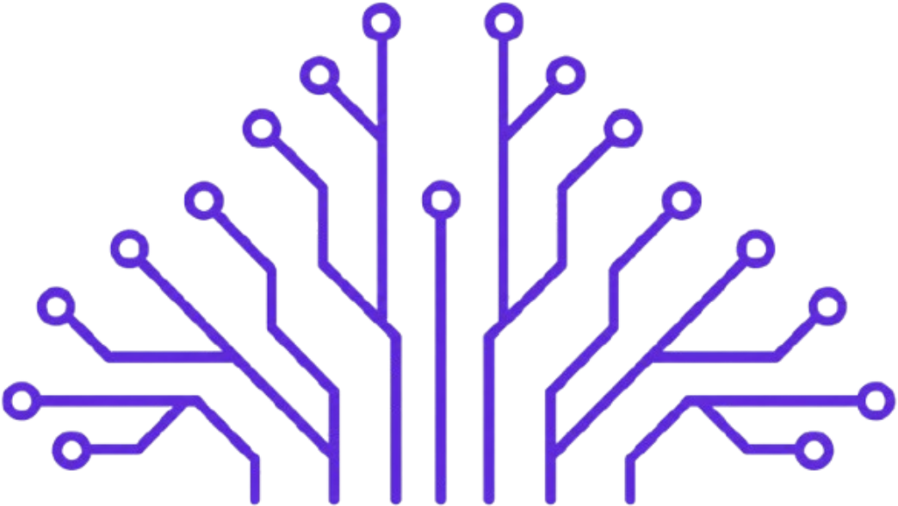

JAW 2026 · Hackathon
The Last Frontier of AI
Quantifying Trust & Reliability in Generative AI Output
“Let's conquer the last frontier of AI, let's build for AI reliability.”
In collaboration with
GikaGraph.aiThe Challenge
The world is mesmerised by the creativity of AI. However, creativity and reliability are two opposing objectives.
Existing AI models fail to capture multi-hop reasoning, numerical dependencies, and strict logical constraints over complex data. How do we prove and trust AI outputs that require long contextual memory, stretching far beyond the model context window, numerical consistency, and multi-hop reasoning over heterogeneous data? Your goal is to develop a rigorous framework that ensures AI outputs are reliable, factual, and trustworthy for complex real-world workloads.
The Objective
As Generative AI transitions into complex workflows, the industry faces a critical gap: how do we trust AI-generated responses?
The AI community still lacks a rigorous framework to generate reliable model responses and validate their quality. Models continuously struggle with numerical alignment and long-horizon reasoning over complex datasets.
Hackathon Task
- Input A raw, complex multi-modal dataset (combining structured and unstructured data) and a real-world example set of questions.
- Output A framework that processes this multi-modal dataset to ensure AI outputs are accurate for workloads requiring long contextual memory, numerical consistency, and deep reasoning capabilities, materially improving model reliability and eliminating traditional hallucination vectors.
Evaluation Metric
For each question in the validation set, there will be one exact factual answer. Your score depends on how close your generated response is to the factual target.
Important note
Answers will not be directly present in the dataset. There will be no simple text chunk containing a direct answer, your system must reason, aggregate, and compute across the data.
- 100% score is awarded for an exact match to the ground truth.
- Scoring basis: each question in the validation set is evaluated numerically with respect to the correct answer.
Timeline
- 5th August The dataset and problem statement are released. Participants begin building their solutions.
- 10th August, 5 PM The validation dataset is released. Participants get 67 hours to refine and improve their solutions.
- 13th August, 12 PM Final submission deadline.
- 13th August, evening Winners are informed and invited to present their solution as part of the hackathon. Those not attending in person can present online.
- 15th August Prizes are announced at JAW 2026.
Key details
Prizes
1st place — ₹15,000
2nd place — ₹10,000
₹25,000 total prize pool
Eligibility
Open to all students
Team Size
Up to 4 students per team
How to Participate
Get the problem statement and dataset on GitHub, then register and submit your solution.
Questions?
For questions about the hackathon, write to dhruv.kumar@pilani.bits-pilani.ac.in or contact@gikagraph.ai.